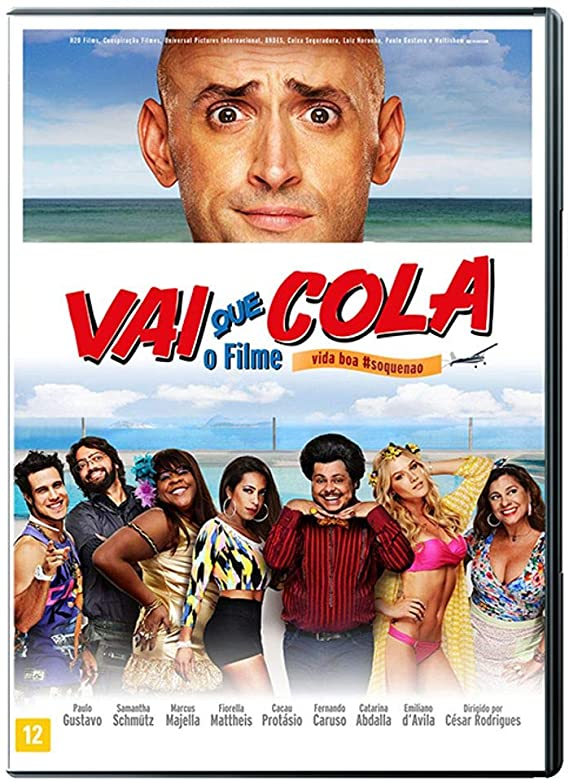

Filmes
Trailers
Trilha Sonora
Contato
Sobre
Vai Que Cola

Diretor:
César Rodrigues
Com:
Cacau Protásio, Catarina Abdalla, Emiliano D'Ávila, Fernando Caruso, Fiorella Mattheis, Jonathan Haagensen, Klebber Toledo, Márcio Kieling, Marcus Majella, Oscar Magrini, Paulo Gustavo, Rogério Fróes, Samanta Schmutz, Werner Schunemann
Gênero:
Comédia
Censura:
12 anos
Tempo de Duração:
1h10min
Sinopse:
Valdomiro (Paulo Gustavo) perde todo seu dinheiro após se envolver em uma falcatrua na empresa da qual era sócio. Para fugir da polícia, o malandro se muda para a pensão de Dona Jô (Catarina Abdalla), onde passa os dias reclamando da nova realidade de entregador de quentinhas. Quando um ex-sócio o procura com um plano para recuperar sua cobertura de frente para o mar, Valdo se vê com a oportunidade de retornar à antiga vida de luxo, mas não esperava ter que carregar toda a turma do subúrbio com ele.